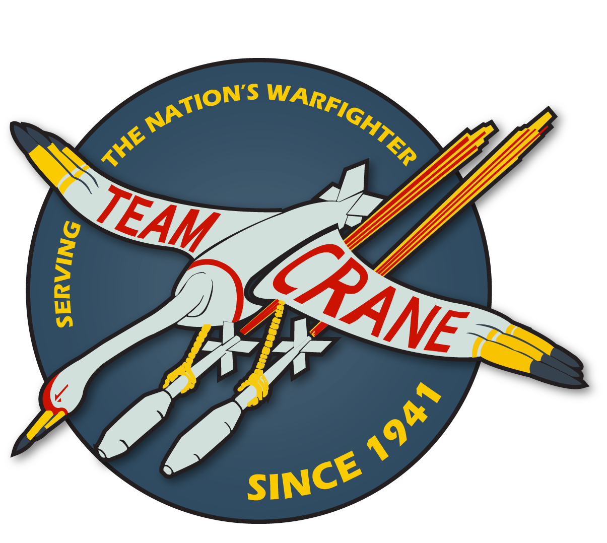
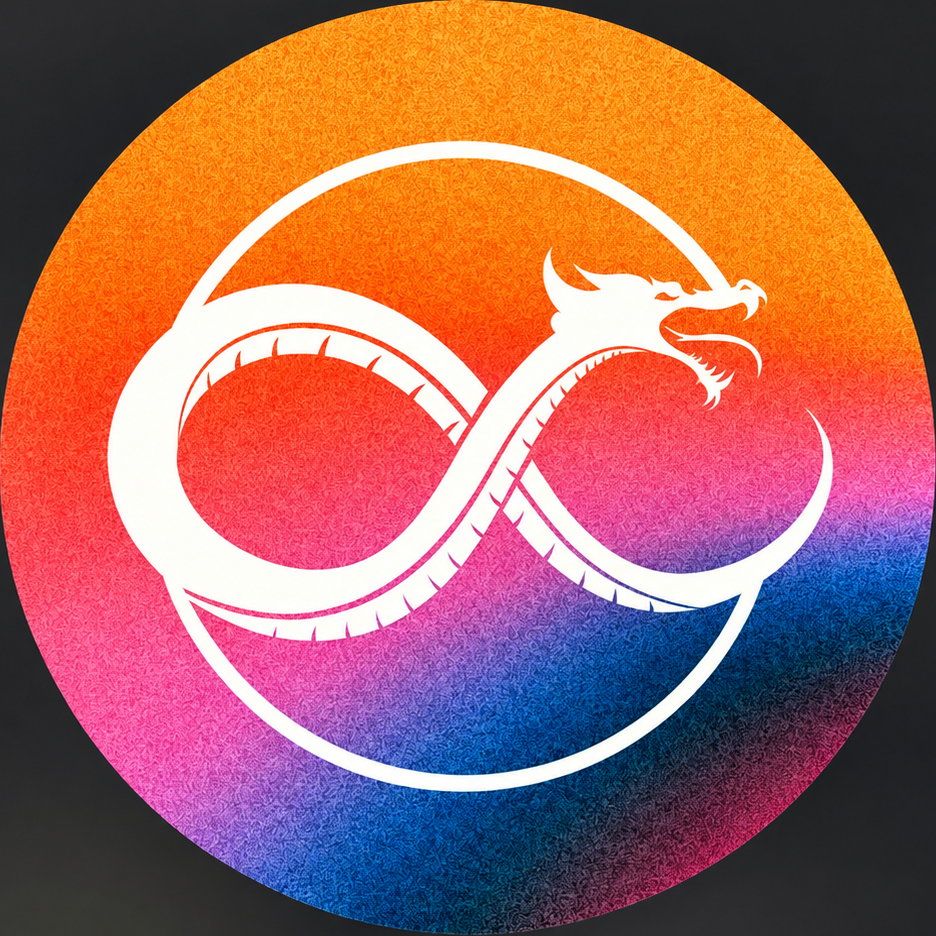

Background
Work & entrepreneurship.
A short record of the work and entrepreneurial experiences that have shaped the way I work.
Work

- May 2025 — Present
IT Service Designer — NSWC Crane
- Jun 2018 — May 2025
UX Design Lead View portfolio ↗ — NSWC Crane
- Jan 2018 — Jun 2018
Program Analyst — NSWC Crane
- Aug 2017 — Dec 2017
Intern — NSWC Crane
Entrepreneurship

- Jan 2024 — Jan 2026
Owner — OCS
Specialized in helping small businesses establish and grow their digital presence to connect with more customers.
Skills & tools
Design
- Prototyping
- Wireframing
- Design systems
- Figma
- Sketch
- Adobe XD
- Keynote
UX Research
- Quantitative & qualitative methodologies
- User interviews
- User observation
- User mapping
- User persona generation
- A/B testing
- Optimal Workshop
- Hotjar
Productivity
- Cross-functional leadership
- IT service management
- Jira
- ServiceNow
- Microsoft Teams
- Agile development
- Kanban
- Scrum
- Content management systems
- ITIL v4 Foundations Certified